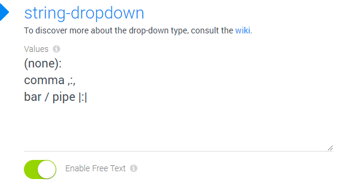
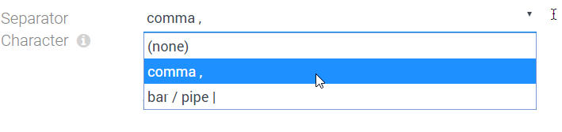

Field Input-Type number-dropdown
Use this field type for configuring simple dropdown UI elements, storing number data. It's an extension of the number field type.
Features
- provide values to select
- provide visible labels which are different from the stored value
- optionally allow users to type in something different
- choose between value-label and label-value ordering
- allow the use of
:in values (just escape as\:)
Special Behavior
- When the drop-down UI element finds data stored, which doesn't match any of the values it has available, it will leave that data intact unless the users selects something manually
Configuring a Number-Dropdown
This shows the configuration dialog:
Using the Dropdown with the optional free-text-entry (2sxc 9.10)
This is what the UI looks like, if Enable Free Text is enabled
If the user then clicks on the I-bar icon (TT in v11+), the input will change to text so you could type something different - like a numeric value which wasn't suggested.

History
- Introduced in EAV / 2sxc 12.04